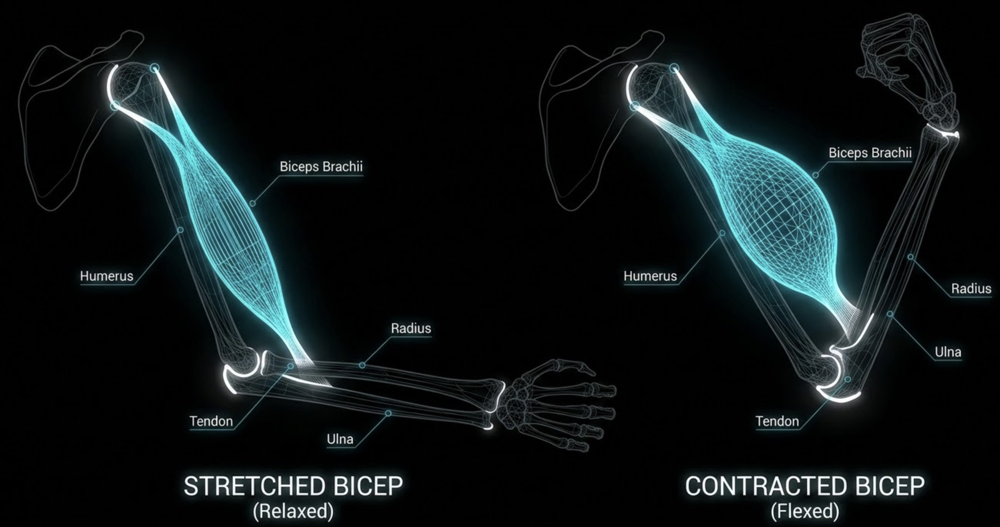

You cannot out-work bad programming. Here is how you actually structure a week of training to maximize growth, manage joint stress, and get out of the gym in under an hour.
The Immutable Rules of Session Organization
The order of your exercises isn't a creative choice; it's a biomechanical requirement.
Heavy, multi-joint compounds (Squats, Deadlifts, Overhead Presses) happen first. You absolutely do not want your lumbar stabilizers and core pre-fatigued when you have a heavy barbell hovering over your windpipe.
Current sports science heavily favors "stretch-mediated hypertrophy"—loading a muscle when it is in its most lengthened position. This is why Incline Dumbbell Curls and Seated Leg Curls often trigger more growth than their standard counterparts. Prioritize deep range-of-motion movements early in the workout.

By the end of your session, your central nervous system is cooked and your form is slipping. This is the exact time to sit down on a machine that balances the weight for you (like a Leg Extension or Pec Deck). Machines let you push to failure safely when free-weight technique would break down.
Picking Your Split (Be Honest With Yourself)
A "split" is just how you allocate muscular fatigue across the week. The optimal split is simply the one your schedule allows you to actually recover from.
The Reality: Best for busy people. You hit every major muscle group 3x a week. Research shows training each muscle 2–3x weekly produces significantly better hypertrophy than once per week, even at matched volume (Schoenfeld, 2016).
The Catch: You have to be economical. One heavy push, one heavy pull, one leg movement. You don't have time for five chest isolation exercises. Every slot needs to count.
The Reality: The sweet spot for intermediate lifters. Great balance of volume and nervous system recovery. Antagonist supersets (bench + row) fit naturally into upper days, halving your rest time without sacrificing performance.
The Catch: Lower body days are brutally taxing because you are stacking squats, hinges, and lunges into a single 60-minute window. Your cardiovascular system may tap out before your legs do.
The Reality: The choice for volume junkies. Push (Chest/Shoulders/Triceps), Pull (Back/Biceps), Legs (Quads/Hams/Calves). Each session is focused, so you can pile on the isolation work without running out of time.
The Catch: You literally have to train six days a week. If you routinely sleep five hours a night, this split will run you into the ground. Recovery is non-negotiable.
Advanced Mechanics: Moving Beyond the Basics
If you want to keep growing past the beginner phase, you have to stop looking at the weight on the bar and start looking at how the muscle is working.
Just because an exercise creates a massive "burn" or shows high activation on an EMG study (like the Concentration Curl) doesn't automatically mean it's the ultimate mass builder. Activation does not perfectly predict growth; mechanical tension under a heavy load does. A heavy barbell curl with controlled eccentrics will build more bicep mass than a light concentration curl with a monster pump.
Barbell rows and bilateral leg presses are great, but they mask imbalances. Introducing single-arm cable rows or single-leg presses forces the lagging side to work without the dominant side taking over. If your left arm always fails first on barbell curls, you have an imbalance that bilateral work will never fix—only expose.
You have to pay the toll for heavy lifting. Incorporating banded clamshells for glute medius activation, or face pulls for scapular retraction, takes 3 minutes but prevents months of joint pain down the line. Treat external rotation as a non-negotiable part of your Pull days. Your rotator cuffs will thank you in your 40s.
Sources — CurlBro Database Literature
- Maeo et al., 2021 — Stretch-mediated hypertrophy and the effect of muscle length on growth
- Schoenfeld, B.J. (2010, 2016, 2017) — Mechanisms of hypertrophy, training frequency meta-analysis, volume dose-response
- McGill, S. (2016) — Low Back Disorders: spinal stability, lumbar pre-fatigue, and cumulative compressive load
- Cools, A.M. et al. (2008) — Scapular muscle balance and shoulder impingement rehabilitation
- Kolber, M.J. et al. (2010) — Shoulder injuries attributed to resistance training
- Willardson, J.M. (2007) — Core stability training applications and stabilizer fatigue sequencing
- NSCA Essentials of Strength Training and Conditioning, 4th ed. (Haff & Triplett, 2016)
- Weakley et al. (2017) — Antagonist superset performance and training time efficiency
- Pedrosa et al. (2023) — Stretch position training and muscle hypertrophy